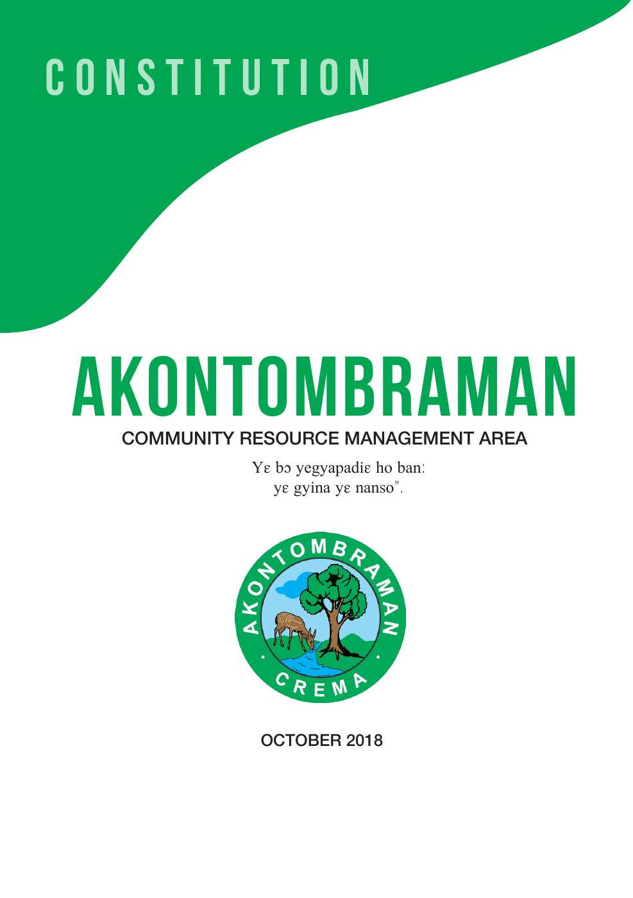
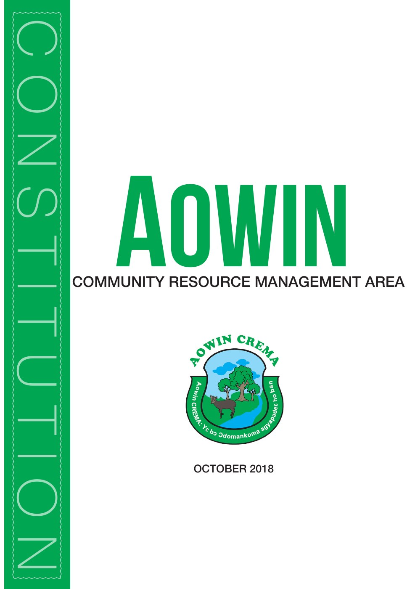
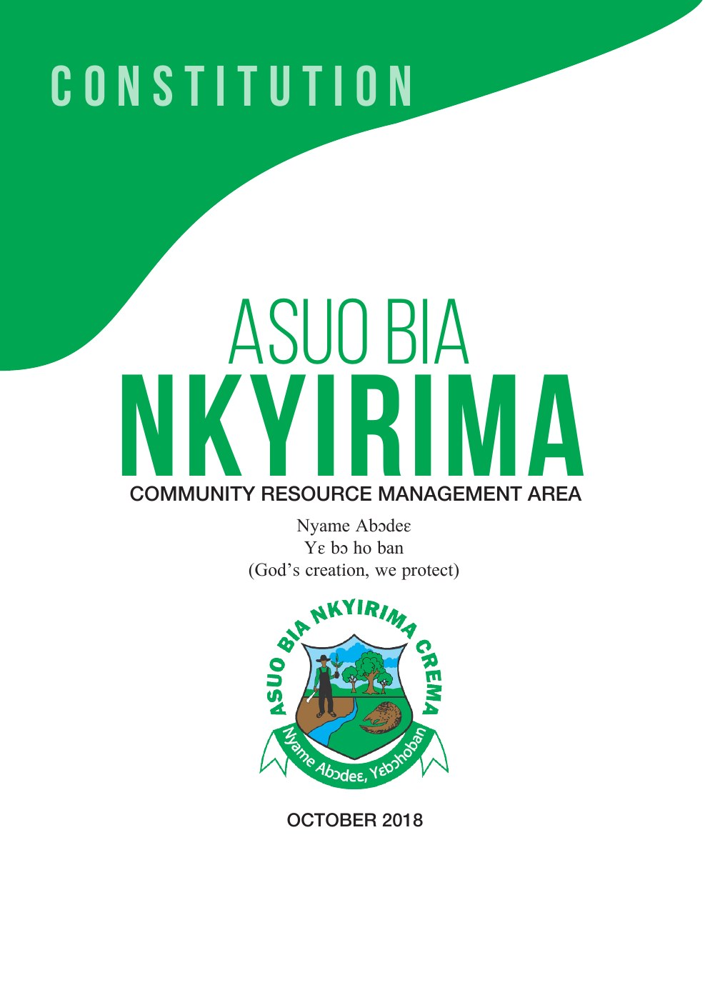
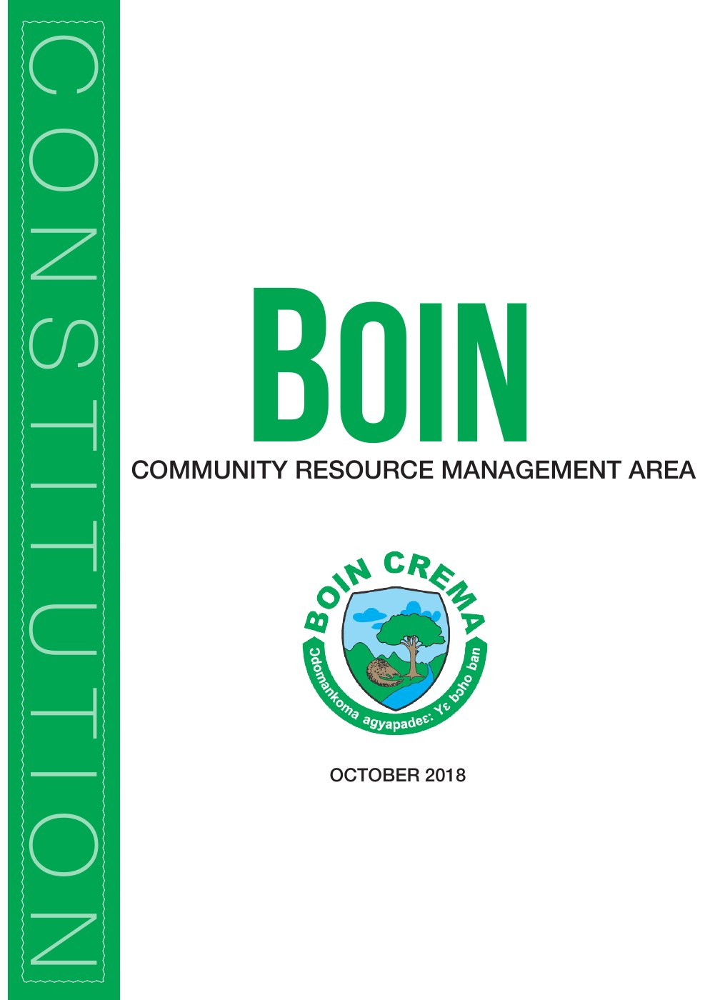
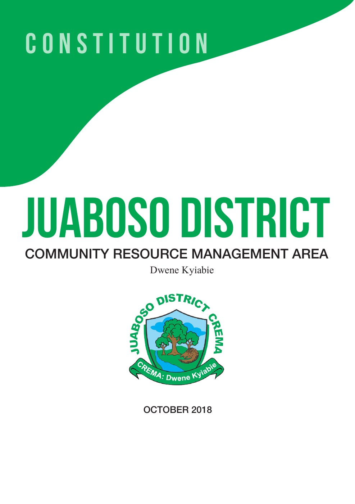
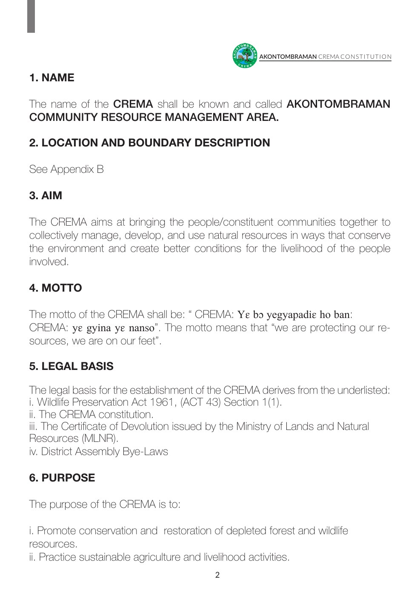
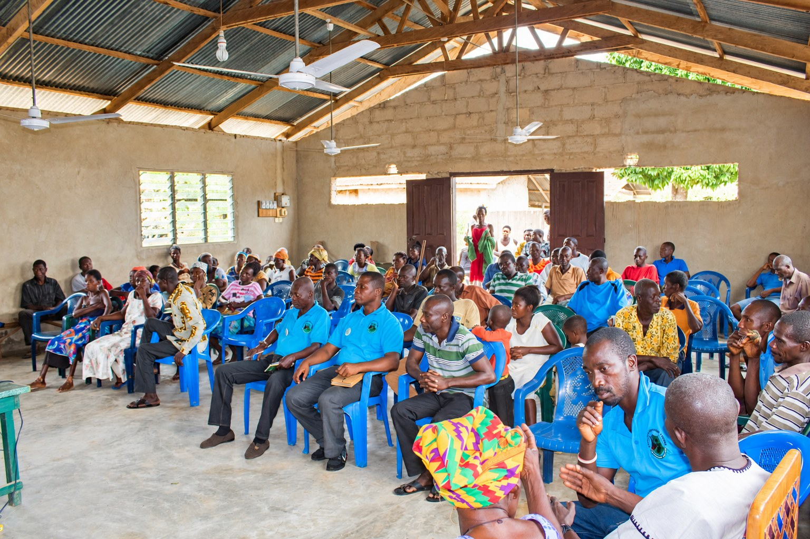
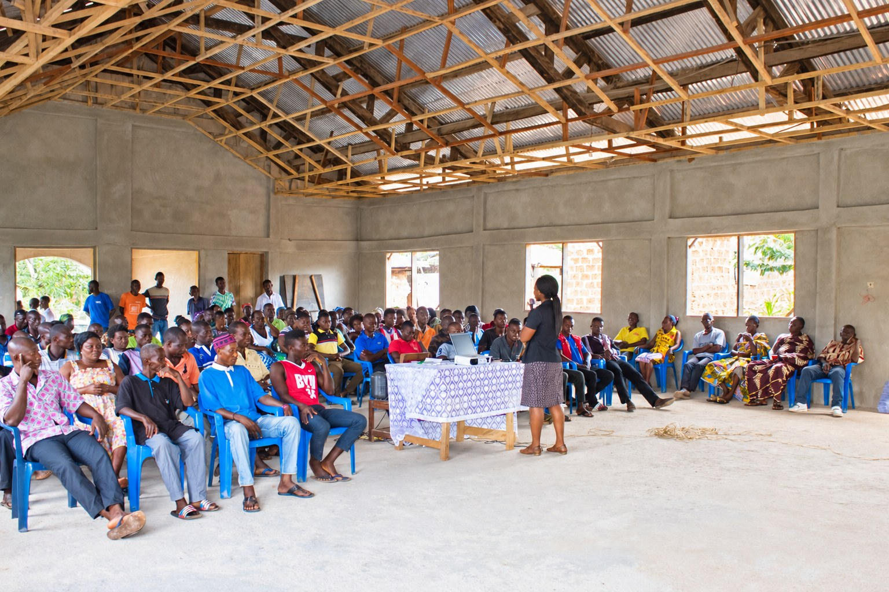
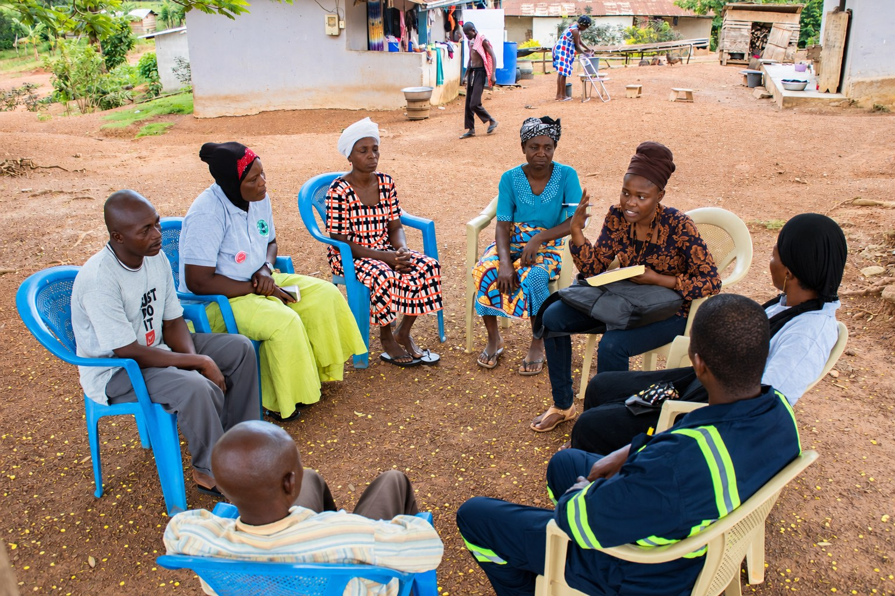
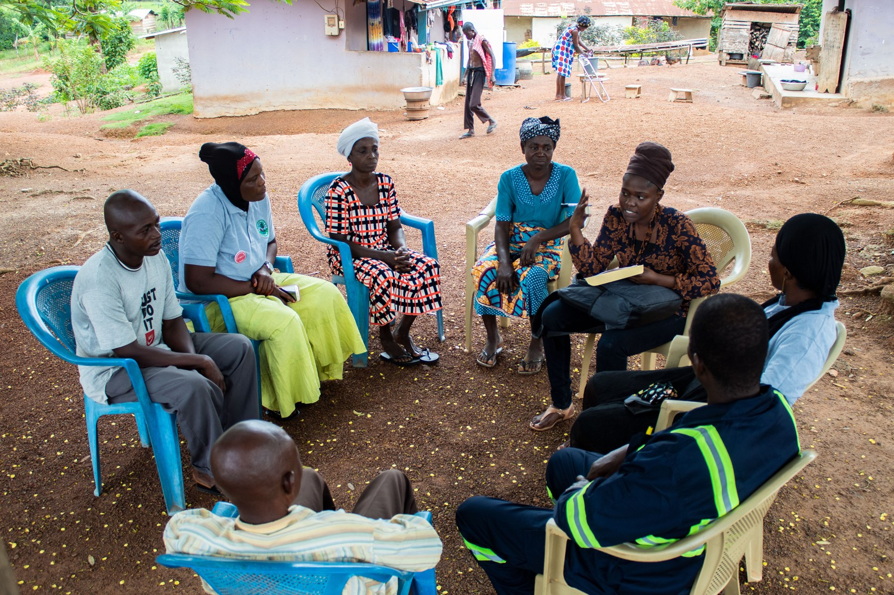

CREMA / GHANA / PUBLICATION DESIGN & DOCUMENTARY WORK
From the printed page
to the community.
I designed constitutions for Community Resource Management Areas in Ghana and worked as the project’s photographer, graphic designer and videographer. This is the story of the publications and the community engagement I helped document.

Five constitutions. One shared purpose.
A new AI-generated portfolio mockup based on my original covers. The original designs are shown below.
WHERE THE WORK STARTED
A constitution with a place in everyday life.
These publications were part of a wider effort to support communities in managing their natural resources. The constitutions set out how each CREMA would operate, from its purpose and membership to the rules around resource use.
My contribution was the design of the publications. The legal and governance content belonged to the wider CREMA process. My work brought that content into a visual format, with a cover and page layout for each constitution.
The five documents in this collection are for Akontombraman, Aowin, Asuo Bia Nkyirima, Boin and Juaboso District. Their covers share a green and white palette while retaining each CREMA’s name, emblem and motto where included.
THE ORIGINAL PUBLICATIONS
A family of designs, each with its own identity.
These are the actual cover designs from the supplied constitution PDFs, dated October 2018. Open any cover to see it at full size.

Akontombraman
Original constitution cover · October 2018
View full size ↗
Aowin
Original constitution cover · October 2018
View full size ↗
Asuo Bia Nkyirima
Original constitution cover · October 2018
View full size ↗
Boin
Original constitution cover · October 2018
View full size ↗
Juaboso District
Original constitution cover · October 2018
View full size ↗BEYOND THE COVER
The structure inside.
The design continues through the interior: numbered sections, bold headings, a running header and the CREMA emblem. This original page shows how the name, aim, motto and purpose sit within the document.
It is a sample of my publication layout work, shown as it appeared in the supplied historical document.

Akontombraman interior page
Original PDF page 3, printed page 2. Historical publication sample.
View full size ↗TAKING THE WORK INTO THE FIELD
The pages were part of a bigger conversation.
In May and June 2019, I was part of the Wildlife Division team taking the constitution and bye-law dissemination programme into the communities. My name appears in the team listed in the project report.
This exercise covered Asuo Bia Nkyirima, Akontombraman and Juaboso District. The report records engagement with all 21 Community Resource Management Committees across those three CREMAs. Aowin and Boin are part of my design collection here; they are not included in that reported field itinerary.
The team met chiefs, elders, queen mothers, committee members and residents. Because many participants were farmers, the sessions were arranged around times that suited their working day.

The community in the room
Community members and committee representatives at Old Papaase, as identified in the report.
Photography: Frederick Oppong Tabiri · AI-assisted presentation edit

Explaining the constitution
The report identifies this as the constitution presentation at Akweikrom. The team’s facilitator led the discussion.
Photography: Frederick Oppong Tabiri · AI-assisted presentation edit
MY CAMERA, THE TEAM’S WORK
Recording the people behind the programme.
Alongside my design work, I photographed the project and worked as its videographer. The photographs from the report shown here are mine. They document the gathering, the presentations and the smaller conversations taking place around the programme.
The discussions brought practical questions into the room: protecting farms from wildlife, understanding permits and knowing the responsibilities of committee members. Colleagues led the presentations and answered those questions. My role in this story is the design and visual documentation of that work.
The programme also included separate discussions about additional or alternative livelihoods, led by a colleague. My photograph below shows one of those conversations at Abronehia.

A smaller conversation
A livelihood discussion with community members at Abronehia, within the Akontombraman CREMA.
Photography: Frederick Oppong Tabiri · AI-assisted presentation edit
Compare with my original photograph

View original full size ↗LOOKING BACK
The connection that stays with me.
Looking back at the publications and photographs together, what stands out is the connection between a designed document and the people it concerns. This project brought my publication design, photography and video work into the same community setting.
The team report records that the planned committee visits were completed despite difficult roads. That is the documented delivery outcome. The photographs tell the human side of that programme, alongside the constitution designs.
About this project story and its sources
This is a retrospective portfolio account based on the five supplied constitution PDFs, the Wildlife Division’s June 2019 dissemination report covering 29 May to 11 June 2019, and my confirmed account of my design, photography and videography contribution. I confirmed that I took all photographs in that report.
The mockup was newly generated for this portfolio and is not a photograph of historical printed copies. The cover and interior images are exports from the original PDFs. Field photographs have AI-assisted presentation edits; their originals are available in each comparison. Video is part of my confirmed role, but no video sample is included in this selection.
The report supports my team membership, the programme context, locations and completion of the 21 committee visits. It does not establish that I led the programme or drafted the legal content, and no measured behaviour change is claimed.